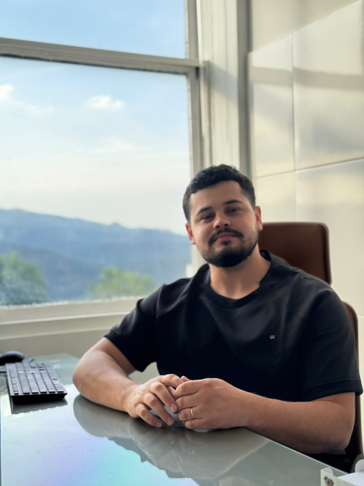
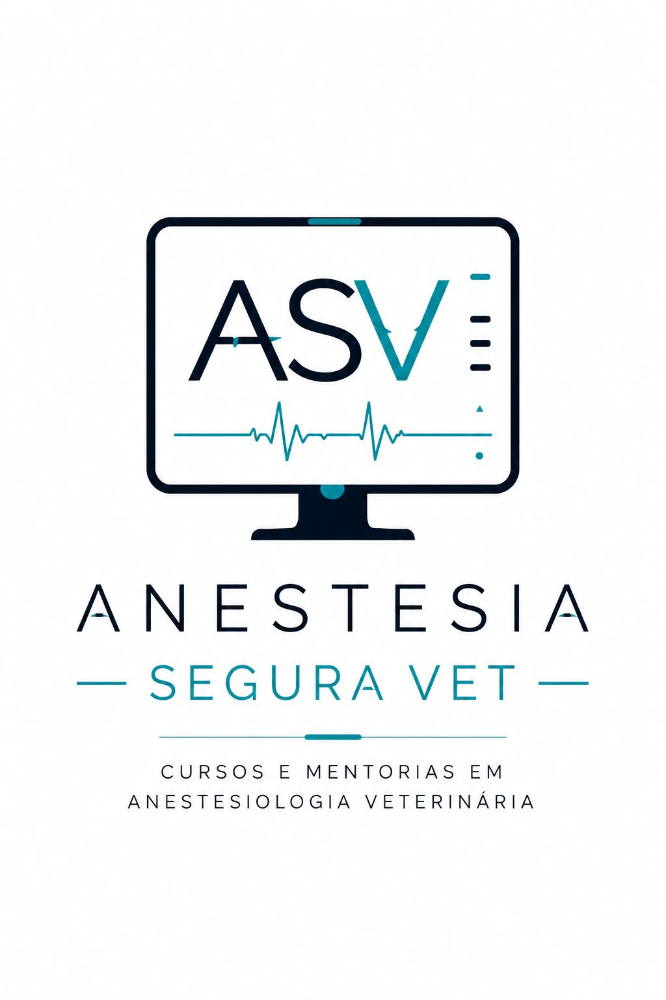

ANESTESIA SEGURA VET
3 dias intensivos: teoria, prática em cadáver e pacientes vivos
Garantir minha vaga
SOBRE A ASV
A Anestesia Segura VET (ASV) nasceu para oferecer educação, conteúdo e mentoria a médicos-veterinários que querem ir além do básico em anestesiologia.
Nossa missão é elevar a segurança anestésica na rotina clínica de pequenos animais, unindo ciência, prática e responsabilidade com a vida do paciente.
O CURSO
Formato presencial e imersivo, pensado para consolidar teoria e prática em sequência, do raciocínio clínico até a mão na massa.
PARA QUEM É
Quer mais segurança e autonomia na hora de anestesiar.
Busca consolidar fundamentos com prática supervisionada.
Quer atualização com diretrizes e evidências atuais.
Já atua em estágios e quer sair na frente na anestesiologia.
O QUE VOCÊ VAI DOMINAR
Conteúdo ancorado em diretrizes atuais e baseado em evidências: WSAVA · RECOVER · ACVAA/ECVAA · AAHA · ACVIM
SOBRE O INSTRUTOR

Pós-graduado em Anestesiologia Veterinária
CRMV-MG 28077
Especialista em anestesia de pequenos animais (cães e gatos), com atuação dividida entre a rotina clínica, a educação veterinária através da ASV e a produção de conteúdo técnico para colegas de profissão.
MENTORIA
Além do curso presencial, a ASV oferece mentoria para profissionais que querem acompanhamento próximo na evolução da prática anestésica — discussão de casos, dúvidas de rotina e suporte na tomada de decisão clínica.
Quero saber mais
CONTEÚDO
Carrosséis, Reels e podcast com conteúdo técnico sobre anestesiologia veterinária, toda semana, direto no seu feed.
INVESTIMENTO
18 vagas no total, divididas em 3 lotes progressivos.
DEPOIMENTOS
“O curso mudou completamente minha segurança para conduzir casos anestésicos complexos na rotina.”
“A parte prática em paciente vivo foi o diferencial. Saí de lá aplicando no dia seguinte.”
“Conteúdo denso, mas muito bem conduzido. Recomendo para quem quer se especializar.”
FAQ
O local ainda está sendo definido e será divulgado em breve nos canais oficiais da ASV e no próprio site.
O curso acontece nos dias 13, 14 e 15 de novembro (sexta, sábado e domingo), em formato presencial e intensivo.
Recomendamos jaleco ou scrub, calçado fechado, material para anotações e disposição para prática hands-on. Mais detalhes serão enviados após a inscrição.
Sim, todos os participantes recebem certificado de participação ao final do curso.
O curso é voltado a médicos-veterinários e estudantes avançados de Medicina Veterinária. Não é necessário ser especialista em anestesiologia para participar.
O pagamento é feito online, com opções de parcelamento no cartão. Ao clicar em "Garantir minha vaga" você é direcionado para o link de pagamento do lote atual.